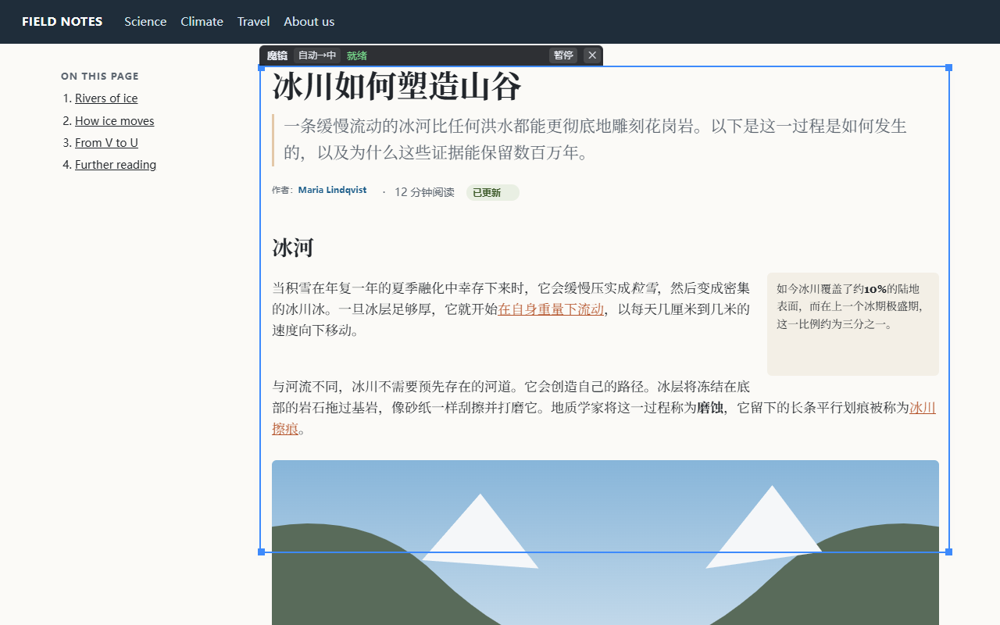
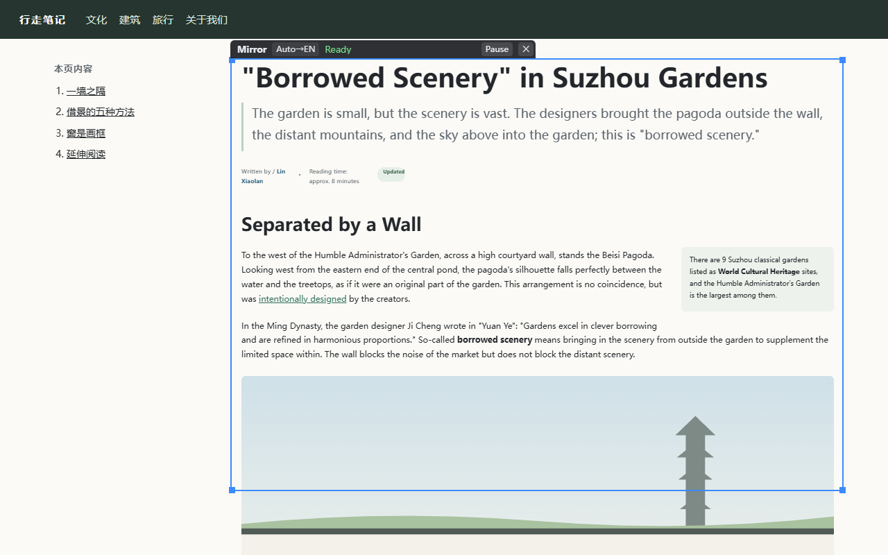
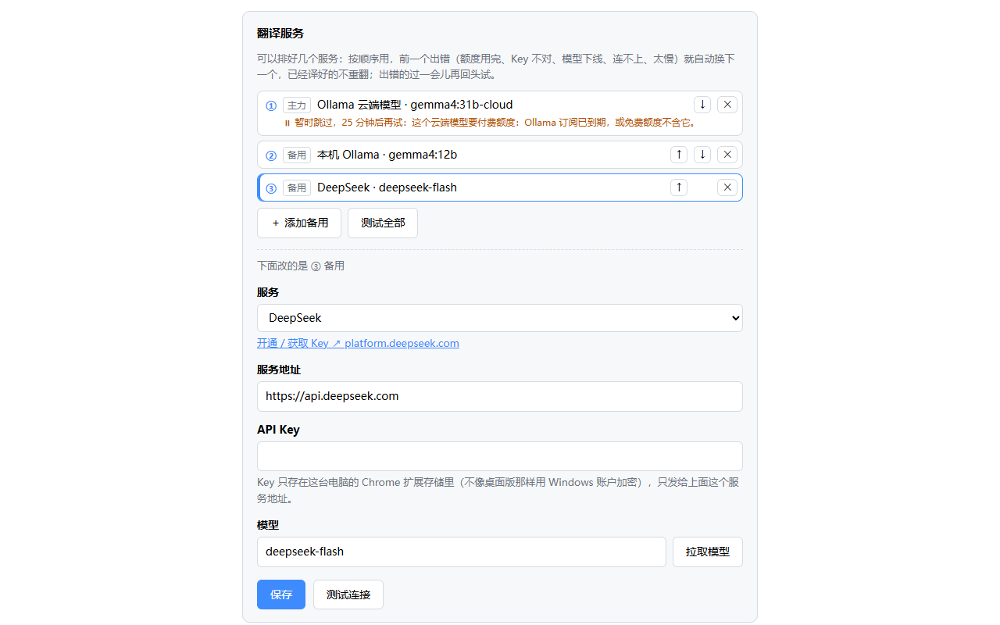
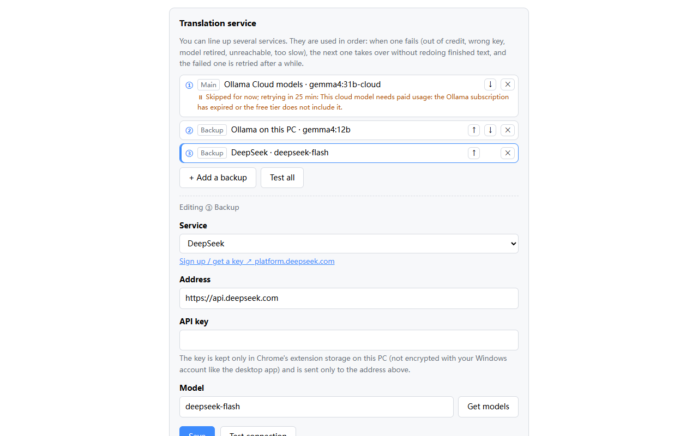
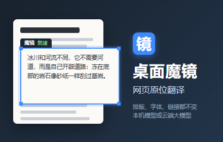
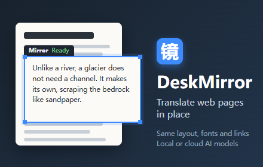

Chrome 应用商店 · 填写清单（桌面魔镜 0.4.0）
一边开着开发者后台，一边开着这一页：文字点“复制”再粘贴进对应的框；图片从
F:\AI\Claude\deskmirror-browser\store\images 上传。扩展的名字和一句话简介来自 zip 包本身，后台里不用填。
① 商品详情（Store listing）
后台这一页顶部可以切换语言：英语是默认语言，另外还有简体中文、繁体中文，三种语言各填一份“说明”。
说明 · 简体中文 切到“中文（简体）”时填
桌面魔镜把译文放回原文的位置。 在网页上打开一块可以拖动、可以调整大小的“镜子”：镜框里是同一位置的译文，排版、字体、颜色、图片和链接都和原网页一样；镜框外照常是原网页。哪一句对应哪一句，一眼就能看出来。 【怎么用】 • 点工具栏上的“镜”图标，或按 Alt+Shift+M，在当前网页打开魔镜；再按一次关掉。 • 拖动镜子上方的深色标签移动，拖蓝色边框调整大小。 • 镜子里的链接、按钮、输入框照常能点，点到的就是下面的真网页。 • 按住 Ctrl+Alt+O 临时看原文；点标签上的语言按钮随时换翻译方向。 【翻译服务随你选】 • 本机模型：Ollama、LM Studio（免费，文字不出这台电脑） • Ollama 云端模型 • DeepSeek、通义千问（阿里云百炼）、智谱 GLM、Kimi、MiniMax、豆包（火山方舟）、硅基流动、腾讯混元、百度千帆、阶跃星辰、魔搭 • OpenAI、Google Gemini、Anthropic Claude、OpenRouter、Groq、Mistral、xAI Grok，以及其他 OpenAI 兼容接口 填好 API Key 后点“拉取模型”，自动列出能用的模型，并挑一个适合翻译的。 【备用阵列】 可以同时排好几个翻译服务。前一个额度用完、Key 不对、模型下线、连不上或太慢时，自动换下一个，已经译好的段落不重翻；镜框标签上会显示正在用哪个备用。 【语言】 原文可以自动识别，也可以指定英文、中文、日文、韩文、印尼文；可以译成简体中文、繁体中文、英文、日文、韩文、印尼文。界面跟着你的母语（中文或英文）。 【隐私】 • 不用注册账号，没有开发者自己的服务器，不统计、不追踪。 • 网页文字只发给你自己选的翻译服务；用本机模型时，文字不离开这台电脑。 • API Key 只保存在这台电脑的浏览器里，只发给对应的翻译服务。 【说明】 • 只翻网页上的文字；图片里的字、视频里烧进去的字幕不翻。 • Chrome 自带的 PDF 阅读器、chrome:// 页面和应用商店页面里打不开魔镜。 • 想翻译电脑上的任何软件、游戏和视频字幕，可以试试 Windows 桌面版：https://github.com/Yudreamsky/deskmirror 免费使用，所有功能都能用。意见反馈：a885187@gmail.com
说明 · English 默认语言（英语）时填
DeskMirror puts the translation right where the original text is. Open a "mirror" on any web page, then drag or resize it as you like. Inside the frame, the same spot of the page appears translated, with the page's own layout, fonts, colors, images and links. Outside the frame, the page stays as it is, so you can always tell which sentence is which. HOW TO USE • Click the mirror icon in the toolbar, or press Alt+Shift+M, to open the mirror on the current page; press again to close it. • Drag the dark tab above the mirror to move it; drag the blue border to resize it. • Links, buttons and input boxes inside the mirror still work: clicks go to the real page underneath. • Hold Ctrl+Alt+O to peek at the original; click the language button on the tab to switch directions. CHOOSE YOUR TRANSLATION SERVICE • Models on your own computer: Ollama, LM Studio (free; the text never leaves your PC) • Ollama Cloud models • OpenAI, Google Gemini, Anthropic Claude, OpenRouter, Groq, Mistral, xAI Grok, DeepSeek, Qwen (Alibaba Model Studio), Zhipu GLM, Moonshot Kimi, MiniMax, Doubao, SiliconFlow and other OpenAI-compatible APIs After you enter an API key, "Get models" lists the models you can use and picks one that suits translation. BACKUP SERVICES Line up several services. When one runs out of credit, has a wrong key, retires a model, can't be reached or is too slow, the next one takes over without redoing finished text. The mirror's tab shows which backup is in use. LANGUAGES The original language is detected automatically, or you can pick English, Chinese, Japanese, Korean or Indonesian. Translate into Simplified Chinese, Traditional Chinese, English, Japanese, Korean or Indonesian. The interface is in English or Chinese. PRIVACY • No account and no developer server; no analytics or tracking. • Page text is sent only to the translation service you choose; with a local model it never leaves your computer. • API keys are stored only in this browser on your computer and sent only to their own service. NOTES • Only text on the page is translated, not text inside images or subtitles burned into videos. • The mirror can't open in Chrome's built-in PDF viewer, on chrome:// pages or in the Web Store. • To translate any app, game or video subtitles on your screen, try the Windows desktop version: https://github.com/Yudreamsky/deskmirror Free, with every feature included. Feedback: a885187@gmail.com
說明 · 繁體中文 切到“中文（繁体）”时填
桌面魔鏡把譯文放回原文的位置。 在網頁上開一塊可以拖曳、可以調整大小的「鏡子」：鏡框裡是同一位置的譯文，排版、字型、顏色、圖片和連結都和原網頁一樣；鏡框外照常是原網頁。哪一句對應哪一句，一眼就能看出來。 【怎麼用】 • 點工具列上的「鏡」圖示，或按 Alt+Shift+M，在目前的網頁開啟魔鏡；再按一次關閉。 • 拖曳鏡子上方的深色標籤來移動，拖曳藍色邊框調整大小。 • 鏡子裡的連結、按鈕、輸入框照常能點，點到的就是下面的真網頁。 • 按住 Ctrl+Alt+O 暫時看原文；點標籤上的語言按鈕隨時切換翻譯方向。 【翻譯服務自由選】 • 本機模型：Ollama、LM Studio（免費，文字不離開這台電腦） • Ollama 雲端模型 • OpenAI、Google Gemini、Anthropic Claude、OpenRouter、Groq、Mistral、xAI Grok、DeepSeek、通義千問、智譜 GLM、Kimi、MiniMax 等，以及其他 OpenAI 相容介面 填好 API Key 後點「拉取模型」，自動列出可用的模型，並挑一個適合翻譯的。 【備用陣列】 可以同時排好幾個翻譯服務。前一個額度用完、Key 不對、模型下線、連不上或太慢時，自動換下一個，已經譯好的段落不重翻；鏡框標籤上會顯示正在用哪個備用。 【語言】 原文可以自動辨識，也可以指定英文、中文、日文、韓文、印尼文；可以譯成簡體中文、繁體中文、英文、日文、韓文、印尼文。介面跟著你的母語（中文或英文）。 【隱私】 • 不用註冊帳號，沒有開發者自己的伺服器，不統計、不追蹤。 • 網頁文字只傳給你自己選的翻譯服務；用本機模型時，文字不離開這台電腦。 • API Key 只儲存在這台電腦的瀏覽器裡，只傳給對應的翻譯服務。 【說明】 • 只翻譯網頁上的文字；圖片裡的字、影片裡燒進去的字幕不翻。 • Chrome 內建的 PDF 閱讀器、chrome:// 頁面和線上應用程式商店頁面裡無法開啟魔鏡。 • 想翻譯電腦上的任何軟體、遊戲和影片字幕，可以試試 Windows 桌面版：https://github.com/Yudreamsky/deskmirror 免費使用，所有功能都能用。意見回饋：a885187@gmail.com
类别（Category）
选 生产效率 → 工具（Productivity → Tools）
语言（Language）
选 中文（简体）。主要用户是中文母语；英文、繁体中文的说明在上面各填一份
图片 文件在 store\images 里






- 简体、繁体中文：截图按 1、3、2 的顺序传，宣传图传 promo-440x280-zh.png。
- 英语（默认）：截图按 2、4、1 的顺序传，宣传图传 promo-440x280-en.png。
- 如果后台只让传一套图片（不分语言），就传 1、2、3、4 和中文宣传图。大型宣传图（1400×560）和宣传视频可以不填。
首页网址（Homepage URL，可选）
https://github.com/Yudreamsky/deskmirror
这是桌面版的主页；浏览器版没有单独的主页，不想填可以空着。“官方网址”“支持网址”空着就行，反馈邮箱已经写在说明里。
成人内容（Mature content）
选 否
② 隐私权（Privacy practices）
审核员看英文最顺，所以理由用英文；每个框下面是中文意思。
单一用途说明（Single purpose）
Translates the text of the current web page in place: inside a movable frame that the user places on the page, the page's text is shown translated in its original layout, using the translation service the user chooses.
把当前网页的文字原位翻译：在用户放的可移动镜框里，用用户选的翻译服务，按原排版显示译文。
activeTab 的理由
Used only after the user clicks the toolbar icon or presses the keyboard shortcut, to show the translation frame on the current tab. The extension does nothing on any page until the user does this.
只在用户点图标或按快捷键后，在当前标签页显示镜框；用户不操作就不碰任何网页。
scripting 的理由
Injects the extension's own bundled scripts (no remote code) into the current tab when the user clicks the toolbar icon or presses the shortcut. These scripts build the translation frame and find the text to translate.
用户点图标或按快捷键时，把扩展自带的脚本（不从网上加载代码）放进当前标签页，用来画镜框、找要翻译的文字。
storage 的理由
Saves the user's settings on this computer: languages, the list of translation services, and the API keys the user enters for them. A short-lived note of which service recently failed is kept in session storage and cleared when the browser closes.
在这台电脑上保存设置：语言、翻译服务列表、用户填的 API Key；哪个服务刚出过错只记在会话存储里，关浏览器就清空。
主机权限的理由（Host permissions）
http://127.0.0.1/* and http://localhost/*: send page text to a translation model running on the user's own computer (Ollama, LM Studio). https://api.deepseek.com/*: one of the built-in translation services. Optional https://*/* and http://*/*: requested at runtime only when the user adds a translation service at another address (for example OpenAI, Google Gemini or a custom endpoint), and used only for that address. Page text is sent only to the service the user configured.
本机地址：请求这台电脑上的模型；api.deepseek.com：内置的翻译服务之一；其他网址（可选权限）：只在用户添加该网址的翻译服务时才申请，只用于这个网址。
是否使用远程代码（Remote code）
选 否，我未使用远程代码（No, I am not using remote code）
数据使用（Data usage）
勾选 网站内容（Website content：网页文字会发给用户选的翻译服务）和 身份验证信息（Authentication information：用户填的 API Key，只存本机、只发给对应服务）。其他类别都不勾。
下面三条声明 全部勾选：不出售给第三方；不用于与单一用途无关的目的；不用于判断信用或贷款。
下面三条声明 全部勾选：不出售给第三方；不用于与单一用途无关的目的；不用于判断信用或贷款。
隐私权政策网址（Privacy policy URL）
还没有网址。政策已经写好（store\privacy-policy.md，中英文），需要放到一个公开能打开的网址上，见我在对话里的说明。
③ 分发（Distribution）
付费
选 免费（不包含应用内购买）
公开范围（Visibility）
选 公开。想先只给自己和朋友试，就选 不公开（有链接的人才能装，以后可以改成公开）
地区
选 所有地区
④ 测试说明（Test instructions，建议填）
给审核员的说明
No account is needed. The extension translates with a service the reviewer chooses; Settings opens automatically after installation. Option A (free, local): install Ollama from https://ollama.com, run "ollama pull gemma4:12b", and keep the default service "Ollama on this PC". Option B: in Settings choose any listed provider (for example OpenAI or Google Gemini), paste an API key, click "Test connection", then "Save". Then open any English article (for example https://en.wikipedia.org/wiki/Glacier) and click the toolbar icon or press Alt+Shift+M. A blue frame appears; inside it, the page text is replaced by the translation in the same layout. Drag the dark tab to move the frame, drag the border to resize it, and hold Ctrl+Alt+O to see the original.
用户名、密码两栏空着。审核员没有 Key 也能用本机 Ollama 试；要不要另外给审核员一个测试用的 Key，由你决定（我不会用你的 Key）。
⑤ 最后
- 每一页填完点 保存草稿。
- 隐私权政策网址填好后，左上角会显示还缺什么；都齐了再点 提交审核（这一步你自己点）。
- 审核一般几天。通过后会按“公开范围”上架；以后更新：改版本号 →
node tools\pack.mjs→ 在“软件包”页上传新 zip → 提交。